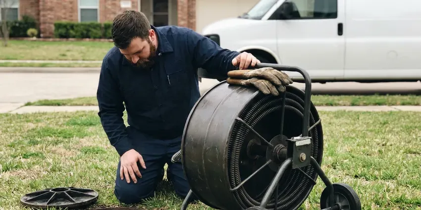

Drainage Services in Southaven, MS
Dealing with slow drains or a backed-up sewer line in Southaven, MS? DFM Plumbing is your local pro for all types of drainage services.
- Upfront Pricing
- Upfront Pricing
- Camera Inspections Included
- Satisfaction Guaranteed

Reliable Drainage Solutions Are Here in Southaven, MS.
We find out why water is backing up or pooling and give you a clear, written plan.
Dependable Drainage Services for Homes & Businesses in Southaven, MS
DFM Plumbing provides comprehensive drainage services throughout Southaven, MS, addressing everything from simple sink clogs to complex main sewer line blockages. Our skilled plumbers use tools like hydro-jetting and camera inspections to diagnose and resolve your drainage issues efficiently.
Our expertise includes:
- Advanced Hydro-Jetting for Tough Clogs
- Snaking, hydro jetting and camera inspection of household drain lines
- Drain Line Repair & Replacement

Additional Plumbing Maintenance Services in Southaven, MS
Our maintenance and specialty plumbing services in Southaven, MS protect your home year-round and extend the life of every system.


Customers
Why Choose DFM Plumbing for Drainage Services in Southaven, MS?
Our commitment to quality workmanship and customer satisfaction sets us apart in the Southaven area. We ensure every drainage job is done right the first time.
- Storm Ready, Our yard drainage is sized for intense storms, not just light rain.
- Whole-Property View, We trace water from the roof and fixtures right down to the street or a dry well.
- Comprehensive Solutions, From minor clogs to major line repairs and installations, we offer a full range of drainage services.
Citywide Coverage
We make sure that no matter where you are in Southaven, professional drainage services are just a phone call away. Our goal is to provide prompt, effective solutions to all residents and businesses.
Experienced Team
Our plumbing technicians are well trained and experienced in all aspects of drainage services, from diagnosing complex issues to performing precise repairs and installations. They stay updated on the latest techniques and local plumbing codes.
Safety-First Approach
Our jetting and cable equipment is operated by trained technicians with protective gear. We never route storm water into the sanitary sewer, which is not allowed and can overload the system.
Trusted Certified Southaven Plumbing Services Professionals
At DFM Plumbing, we take pride in providing certified plumbing services throughout Southaven, MS. Backed by leading industry credentials, our experienced plumbers combine technical skill with genuine customer care. Whether it is repair, installation, or maintenance, we follow strict safety and quality standards to deliver long-lasting results you can trust.
Call Us Now PHCC Plumbing Contractor Recognition
PHCC Plumbing Contractor Recognition Better Business Bureau (BBB) Accreditation
Better Business Bureau (BBB) Accreditation Angi Certified Pro
Angi Certified Pro ISO 9001 Quality Management Certification
ISO 9001 Quality Management CertificationDependable Drainage Services in Southaven, MS
Downspout and Roof Drain Solutions in Southaven
Gutters and scuppers concentrate a lot of roof water into a few points, usually right next to the foundation. We connect downspouts to buried solid pipe and run it to pop-up emitters or a dry well well away from the house. Expansive clay soils are common in Mississippi, swelling with rain and shrinking in dry spells, which puts stress on foundations and buried pipes. Moving that water away also stops erosion that undermines walkways and landscaping.

Commercial Drainage Solutions in Southaven
Businesses in Southaven rely on efficient drainage systems to operate smoothly. We provide specialized commercial drainage solutions for restaurants, retail spaces, and industrial facilities. From grease trap cleaning and maintenance to large-scale storm drain management, our services minimize downtime and support compliance with health and safety regulations, handling the specific demands of commercial plumbing.
Drainage Service Cost Comparison in Southaven, MS
Clearing a single fixture drain usually costs $125 to $300, and a main line clearing runs $200 to $500. Hydro jetting a main line usually costs $400 to $900. Yard drainage costs vary more: a short French drain may run $1,500 to $4,000, while channel drains and dry wells range from $1,000 to $6,000 depending on size and soil. We provide a written estimate after reviewing your site.
Sewer Line Repair & Replacement in Southaven, MS
Issues with your main sewer line can lead to significant problems, including foul odors and widespread backups. Our sewer line services in Southaven, MS begin with thorough camera inspections to accurately locate breaks, cracks, or tree root intrusions. We offer both trenchless repair options, like pipe lining or bursting, and traditional excavation methods, depending on the severity and location of the damage, minimizing disruption to your property.
Drainage System Maintenance in Southaven
Proactive maintenance is key to avoiding costly drainage problems. Our drainage system maintenance services in Southaven include routine inspections, preventive drain cleaning, and recommendations for addressing potential issues before they escalate. Regular maintenance helps extend the lifespan of your plumbing system, reduce the risk of unexpected repairs, and support optimal performance year-round.
Preventative Drain Maintenance in Southaven, MS
The best way to avoid expensive drain emergencies is through regular maintenance. DFM Plumbing offers scheduled drain cleaning and inspection services to keep your pipes clear and identify potential problems before they escalate. This forward-looking approach is particularly helpful for homes with older plumbing or properties with mature trees near the sewer line.
Hydro-Jetting Services in Southaven
For the toughest clogs and stubborn buildup, our hydro-jetting service in Southaven is a highly effective solution. This method uses high-pressure water streams to scour the interior of your pipes, removing years of accumulated grease, scale, and debris. It's an ideal preventive maintenance tool, especially for commercial kitchens or homes with persistent scale problems, leaving your pipes clean and free-flowing.

French Drain Installation in Southaven
A French drain is a gravel-filled trench with perforated pipe that collects water and carries it away from problem areas. It works well along foundations, behind retaining walls and in low spots that hold water after heavy rain. We wrap the gravel in filter fabric so fine soil does not clog the system. The drain is sloped to an outlet, dry well or approved discharge point.
Drainage Services Near Me in Southaven, MS
Local experience counts in drainage work because slope, soil and storm patterns change from one part of town to another. We know which areas around Southaven have older clay laterals and which have tight lots that channel runoff. That knowledge helps us recommend the most practical fix.
We are committed to being the first-call plumbing experts for all your drainage needs across Southaven, MS. Our proximity allows us to respond quickly to emergencies and schedule routine services at your convenience, keeping your plumbing system in top condition.
DFM Plumbing at a Glance
- Fully licensed plumbing team covering Southaven, MS
- Same-day appointments and 24/7 emergency response
- Clear written estimates, no hidden fees
- 4.8-star rated by 503+ Mississippi customers
Southaven Map
Southaven Information
- Population
- 56,851
- Area codes
- 662/731/901
- Service area
- Southaven and communities within 40 miles
- Nearby
- Horn Lake, Olive Branch, Oxford, Tupelo
Proper drainage services are critical for homes in Southaven, MS, because shifting soil can damage underground pipes and sudden, intense rain can overload inadequate drainage systems. After a flood, checking septic systems, well heads and water heaters is important before returning to normal use.
Expert Services
Trust our professionals for reliable DFM Plumbing solutions in Southaven, MS.
Our Specialized Plumbing Services in Southaven, MS
At DFM Plumbing, we provide a complete range of plumbing services across Southaven, MS. From leak detection to full system installations, our team ensures fast, precise, and affordable service for both residential and commercial properties. Explore our core services below:


How Our Drainage Services Process Works in Southaven, MS
Our drainage services process is designed for efficiency, transparency, and limited disruption to your daily life. We follow a clear set of steps to ensure your drain problems are solved effectively.
Request a Quote
Start by calling us at (601) 265-9260 or filling out our online form to describe your drainage issue. We'll gather necessary details and schedule a convenient time for a service visit.
Diagnosis & Plan
Our technician will arrive on time to thoroughly inspect your drainage system, often using camera inspection. We will explain the problem and present a clear, upfront estimate for the recommended solution.
Expert Service
Once approved, our team will perform the drainage service using specialized tools and techniques. We work carefully, adhering to all safety protocols and local codes.
Frequently Asked Questions About Drainage Services in Southaven
The cost of drainage services in Southaven, MS can range from $150 to $500 for a basic clog removal, but complex issues like main sewer line clearing or hydro-jetting can cost $400 to $800 or more. Factors include the severity of the clog, accessibility, and the tools required. We provide honest, transparent pricing before any work begins.
We regularly install and service quality sump pump brands such as Zoeller, Little Giant, Wayne, and Liberty Pumps. Our technicians can help you choose the best model for your specific needs, considering factors like horsepower, pump type, and reliability for Mississippi weather conditions.
Tree roots are instinctively attracted to the moisture and nutrients found inside sewer lines. Even tiny cracks or loose joints in older pipes can allow roots to penetrate, growing larger over time and causing severe blockages and pipe damage. This is a common issue in plenty of established Southaven, MS neighborhoods with mature trees.
Drain cleaning typically uses snaking or augering to clear simple clogs. Hydro-jetting uses high-pressure water to thoroughly scour the inside of pipes, removing stubborn buildup like grease, scale, and tree roots. Hydro-jetting provides a much deeper clean and is excellent for preventive maintenance or severe blockages.
Watch for slow or gurgling drains, sewer odors, water pooling near the house after storms, soil erosion and cracks in walkways. Standing water in the yard for more than a day is another sign. Call us to have it checked.
Most standard residential drain cleaning services, like clearing a sink or toilet clog, can be completed within 1 to 2 hours. More complex jobs, such as main sewer line clearing or hydro-jetting, may take 2 to 4 hours, depending on the severity and access of the blockage.
Yes, DFM Plumbing stands behind the quality of our work. We offer warranties on our drainage services, including parts and labor. The specific warranty period can vary depending on the type of service performed, such as drain cleaning or sewer line replacement, and will be clearly communicated in your service agreement.
Drain snaking uses a flexible auger to physically break through or retrieve a blockage. Hydro-jetting uses high-pressure water to scour the inside of pipes, removing buildup like grease, scale, and roots, providing a more thorough cleaning. Hydro-jetting is generally more effective for severe or recurring clogs.
What People Are Saying About Our Plumbing Experts?

Mark T.
When our office needed drain cleaning, DFM Plumbing provided quick, reliable service. The plumber arrived on time and made sure every drain flowed perfectly before leaving. Very satisfied.
Drain Cleaning · Olive Branch, MS
James P.
Our commercial plumbing system had a leak under the sink, and DFM Plumbing handled it professionally. The plumbers arrived quickly and restored everything without disruption to our customers.
Commercial Plumbing · Horn Lake, MS
Sofia M.
Two new toilets installed in one visit, no mess left behind, and the tech even adjusted a faucet he noticed was dripping. Fair pricing and really friendly.
Toilet Installation · Southaven, MS
Patricia H.
We had a slab leak that two other companies could not find. DFM Plumbing located it in under an hour, explained our options, and the price matched the quote to the dollar.
Slab Leak Repair · Starkville, MS
Emily R.
I called DFM Plumbing for plumbing repair, and the technician was fast, polite, and thorough. They explained the problem clearly and fixed it the same day. I will definitely hire them again. Highly recommended!
Plumbing Repair · Starkville, MSLaura S.
I scheduled a water heater replacement, and the team made the process smooth and affordable. The new unit works perfectly, and they cleaned up after completing the job.
Water Heater Replacement · Greenville, MS